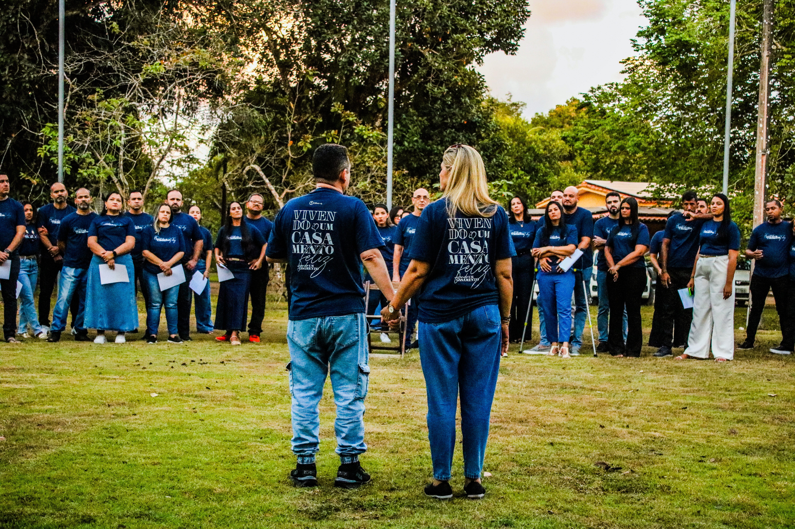

Semeando o reino de Deus pelo mundo
A Missão Semente é o braço missionário da Comunidade Cristã Canaã (C3), dedicada a cumprir o IDE de Jesus através da oração, do serviço e do apoio a missionários. Nosso propósito é alcançar vidas, transformar realidades e compartilhar o amor de Cristo no Brasil e entre as nações.
Adote um projeto, um país ou um missionário em oração. Acreditamos que a oração é uma ferramenta poderosa para fortalecer aqueles que estão no campo missionário e abrir caminhos para o avanço do Evangelho.
Disponibilize seu tempo, dons e habilidades para servir. Seja em ações voluntárias, projetos sociais ou missões transculturais, você pode fazer parte da transformação de vidas.
Apoie a obra missionária por meio de contribuições financeiras ou doações de roupas, alimentos não perecíveis e outros recursos que ajudam a alcançar pessoas em necessidade.
Hoje, a Comunidade Cristã Canaã - C3 segue avançando com os olhos firmes na visão, o coração no Reino e os pés no campo missionário. Nossa história é um testemunho vivo de que, quando Deus chama, Ele também capacita, sustenta e expande
Mantemos ações que ultrapassam as paredes do templo, desenvolvemos trabalhos fixos e rotativos em orfanatos e casas de acolhimento, casas de recuperação, abrigos de idosos e outras instituições geriátricas, hospitais e comunidades carentes com o Projeto Bem Servir. Levamos não apenas assistência material, mas também palestras, cursos, treinamentos, apoio médico, acolhimento emocional e cuidado integral.
Com a Missão Semente mantemos e apoiamos diversos missionários ao redor do mundo, alcançando povos e lugares onde muitos não conseguem chegar. Nosso impacto alcança famílias, crianças e jovens, inclusive no continente africano que em 2025, enviamos nossa primeira missionária transcultural à Guiné-Bissau, para fortalecer o abrigo Lar Fonte de Vida, implantar novos projetos como desenvolver hortas comunitárias e promover a alfabetização de crianças e adolescentes em tribos locais.
Também oferecemos suporte aos missionários em países da Janela 10/40, onde o Evangelho enfrenta maiores desafios e restrições. Continuamos comprometidos em cumprir o IDE de Jesus, servindo pessoas, transformando realidades e anunciando o Evangelho com amor, excelência e fidelidade, no Brasil e entre as nações.